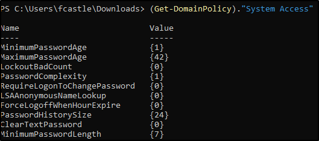

First thing to do, copy the PowerView script into our Windows Machine (in this case THEPUNISHER)
Remember to disable the Antivirus & Threat real-time protection.
Next, execute the PowerShell bypassing Execution Policy
Now, time to execute the script:
We can execute some scripts, like "Get-NetDomain" To get all the info about this machine Domain and more
Or, if we want to get info only about Domain Controllers:
The important value here is the IP Address of the Domain Controllers: we know where they are now!!
We can obtain the Domain Policy:
We can access the Policy if we want to.
In the case of "System Access", we can discover that there is no lockout and more about password criteria!!!

Another command we can use is "Get-NetUser" (to, obviously, get users) Itwill output a long list of users with a lot of details
We can select only the lines we want (think of "select" like a "grep") for the cn field:
We can know more about user Properties:
We can ue the "-Property" to match the property with the users
A good account to catch is someone with a lot of logins (logonaccount property):
This time we can search for Computers instead (or with -FullData option):